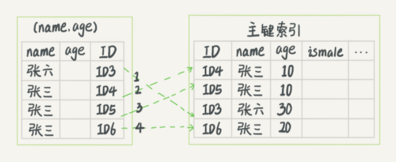
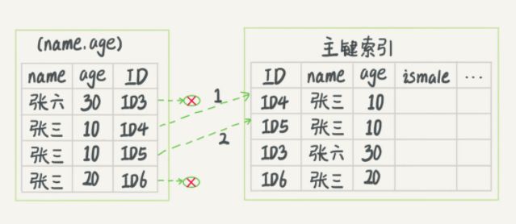
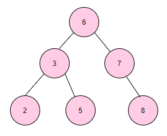
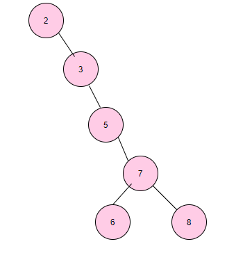
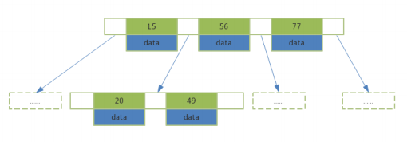
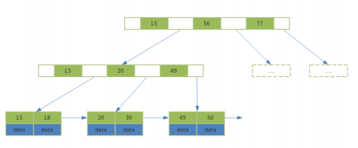

Welcome to yanliang's notes.
索引相关
索引是一种用于快速查询和检索数据的数据结构。常见的索引结构有: B树、B+树、Hash索引。
优点
- 减少检索的数据量，加快数据的检索速度（大大）。 另外，通过创建唯一性索引，可以保证数据库表中每一行数据的唯一性。
缺点
- 创建索引和维护索引需要耗费许多时间：当对表中的数据进行增删改的时候，如果数据有索引，那么索引也需要动态的修改，会降低SQL执行效率。
- 占用物理存储空间 ：索引需要使用物理文件存储，也会耗费一定空间。
索引类型
Mysql索引类型有如下几种：
- 按索引存储结构划分：B Tree索引，Hash 索引， FULLTEXT全文索引，R Tree 索引
- 从应用层次划分：普通索引，唯一索引，主键索引，复合索引
- 从索引键值类型划分：主键索引，辅助索引（二级索引）
- 从数据存储和索引键值逻辑关系划分：聚簇索引，非聚簇索引
普通索引
最基础的索引类型，基于普通字段建立的索引，没有任何限制。
创建普通索引的方式有如下几种：
1 | CREATE INDEX <索引的名字> ON TABLE_NAME (字段名); |
唯一索引
与普通索引类似，不同的是：索引字段必须唯一，但允许有空值。
在创建或者修改表时追加唯一约束，就会自动创建对应的唯一索引。
创建唯一索引的方法如下：
1 | CREATE UNIQUE INDEX <索引名字> ON TABLE_NAME (字段名); |
主键索引
主键索引是一种特殊的唯一索引，它不允许有空值。
在创建或者修改表时追加主键约束即可，每个表只能有一个主键。
创建主键索引的方法如下：
1 | ALTER TABLE TABLE_NAME ADD PRIMARY KEY (字段名); |
复合索引
单一索引是指索引列为一列的情况，即新建索引的语句只实施在一列上；
用户可以在多个列上建立索引，这种索引叫做组复合索引（组合索引）。复合索引可以代替多个单一索引，相比多个单一索引复合 索引所需的开销更小。
索引同时有两个概念叫做窄索引和宽索引。
- 窄索引是指索引列为1-2列的索引
- 宽索引也就是索引列超 过2列的索引
设计索引的一个重要原则就是能用窄索引不用宽索引，因为窄索引往往比组合索引更有效。
创建组合索引的方法如下：
1 | CREATE INDEX <索引的名字> ON tablename (字段名1，字段名2...); |
注意：何时使用复合索引，要根据where条件建索引，注意不要过多使用索引，过多使用会对更新操作效 率有很大影响。 如果表已经建立了(col1，col2)，就没有必要再单独建立（col1）；如果现在有(col1)索引，如果查 询需要col1和col2条件，可以建立(col1,col2)复合索引，对于查询有一定提高。
聚簇索引和辅助索引
聚簇索引和非聚簇索引：B+Tree的叶子节点存放主键索引值和行记录就属于聚簇索引；如果索引值和行 记录分开存放就属于非聚簇索引。
主键索引和辅助索引：B+Tree的叶子节点存放的是主键字段值就属于主键索引；如果存放的是非主键值 就属于辅助索引（二级索引）。
在InnoDB引擎中，主键索引采用的就是聚簇索引结构存储。
聚簇索引（聚集索引）
聚簇索引是一种数据存储方式，InnoDB的聚簇索引就是按照主键顺序构建 B+Tree结构。B+Tree 的叶子节点就是行记录，行记录和主键值紧凑地存储在一起。 这也意味着 InnoDB 的主键索引就 是数据表本身，它按主键顺序存放了整张表的数据，占用的空间就是整个表数据量的大小。通常说 的主键索引就是聚集索引。
InnoDB的表要求必须要有聚簇索引：
- 如果表定义了主键，则主键索引就是聚簇索引
- 如果表没有定义主键，则第一个非空unique列作为聚簇索引
- 否则InnoDB会从建一个隐藏的row-id作为聚簇索引
辅助索引
InnoDB辅助索引，也叫作二级索引，是根据索引列构建 B+Tree结构。但在 B+Tree 的叶子节点中 只存了索引列和主键的信息。二级索引占用的空间会比聚簇索引小很多， 通常创建辅助索引就是 为了提升查询效率。一个表InnoDB只能创建一个聚簇索引，但可以创建多个辅助索引。

非聚簇索引
与InnoDB表存储不同，MyISAM数据表的索引文件和数据文件是分开的，被称为非聚簇索引结构

全文索引
查询操作在数据量较少时，可以采用 like 模糊查询的方式。但是对于大量文本数据的查询，效率就有些低了。这时可以采用全文索引的方式进行优化。
在 Mysql 5.6之前的版本中，只有 MyISAM 存储引擎支持全文索引，在之后的版本中 InnoDB 引擎也开始支持全文索引。
创建全文索引的方法有如下几种：
1 | CREATE FULLTEXT INDEX <索引的名字> ON TABLE_NAME (字段名); |
使用方式如下：
1 | select * from table_name |
全文索引必须在字符串，文本字段上建立。
全文索引字段值必须在最小字符和最大字符之间才有效。（innoDB：3-84， myisam：4-84）
全文索引字段要进行切词处理，按syntax字符进行切割，例如baaa切分为b和aaa
全文索引匹配查询，默认使用的是等值匹配，如果想要匹配更多的结果，可以在布尔模式下搜索 a*
1 | select * from user |
索引原理
索引的目的在于提高查询效率，是存储引擎用于快速查找记录的一种数据结构。需要额外开辟空间和数据维护工作。
索引是物理数据页存储，在数据文件中（InnoDB，ibd文件），利用数据页(page)存储。 索引可以加快检索速度，但是同时也会降低增删改操作速度，索引维护需要代价。
因为索引数据是存储在磁盘上的，索引要想提高查询速度，就要尽可能的减少访问磁盘的次数，好在计算机系统已经做了一些优化，当一次IO时，不光把当前磁盘地址的数据，而是把相邻的数据也都读取到内存缓冲区内，因为局部预读性原理告诉我们，当计算机访问一个地址的数据的时候，与其相邻的数据也会很快被访问到。每一次IO读取的数据我们称之为一页(page)。具体一页有多大数据跟操作系统有关，一般为4k或8k，也就是我们读取一页内的数据时候，实际上才发生了一次IO，这个理论对于索引的数据结构设计非常有帮助。
mysql 索引再次基础上，采用B+ 数的设计，来使得：每次查找数据时把磁盘IO次数控制在一个很小的数量级（B+ 树是一个高度可控的多路搜索树）
二分查找法
二分查找法也叫作折半查找法，它是在有序数组中查找指定数据的搜索算法。
- 优点：等值查询、范围查询性能优秀。
- 缺点：更新数据、新增数据、删除数据维护成本高。
流程
- 首先定位left和right两个指针
- 计算(left+right)/2
- 判断除2后索引位置值与目标值的大小比对
- 索引位置值大于目标值就-1，right移动；如果小于目标值就+1，left移动
举个例子，下面的有序数组有17 个值，查找的目标值是7，过程如下
第一次查找

第二次查找

第三次查找

第四次查找

Hash 查找
Hash底层实现是由Hash表来实现的，是根据键值 <key,value> 存储数据的结构。非常适合根据key查找 value值，也就是单个key查询，或者说等值查询。其结构如下所示：

从上面结构可以看出，Hash索引可以方便的提供等值查询，但是对于范围查询就需要全表扫描了。
Hash索引在MySQL 中Hash结构主要应用在Memory原生的Hash索引 、InnoDB 自适应哈希索引。
InnoDB自适应哈希索引是为了提升查询效率，InnoDB存储引擎会监控表上各个索引页的查询，当 InnoDB注意到某些索引值访问非常频繁时，会在内存中基于B+Tree索引再创建一个哈希索引，使得内存中的 B+Tree 索引具备哈希索引的功能，即能够快速定值访问频繁访问的索引页。
InnoDB自适应哈希索引：在使用Hash索引访问时，一次性查找就能定位数据，等值查询效率要优于 B+Tree。
自适应哈希索引的建立使得InnoDB存储引擎能自动根据索引页访问的频率和模式自动地为某些热点页 建立哈希索引来加速访问。另外InnoDB自适应哈希索引的功能，用户只能选择开启或关闭功能，无法进行人工干涉。
B Tree 索引
MySQL数据库索引采用的是B+Tree结构，在B-Tree结构上做了优化改造。
B- Tree结构
- 索引值和data数据分布在整棵树结构中
- 每个节点可以存放多个索引值及对应的data数据
- 树节点中的多个索引值从左到右升序排列

B树的搜索：从根节点开始，对节点内的索引值序列采用二分法查找，如果命中就结束查找。没有命中会进入子节点重复查找过程，直到所对应的的节点指针为空，或已经是叶子节点了才结束。
B+ Tree结构
- 非叶子节点不存储data数据，只存储索引值，这样便于存储更多的索引值
- 叶子节点包含了所有的索引值和data数据
- 叶子节点用指针连接，提高区间的访问性能

相比B树，B+树进行范围查找时，只需要查找定位两个节点的索引值，然后利用叶子节点的指针进 行遍历即可。而B树需要遍历范围内所有的节点和数据，显然B+Tree效率高。
B+ 树的查找过程
如图所示，如果要查找数据项29，那么首先会把磁盘块1由磁盘加载到内存，此时发生一次IO，在内存中用二分查找确定29在17和35之间，锁定磁盘块1的P2指针，内存时间因为非常短（相比磁盘的IO）可以忽略不计，通过磁盘块1的P2指针的磁盘地址把磁盘块3由磁盘加载到内存，发生第二次IO，29在26和30之间，锁定磁盘块3的P2指针，通过指针加载磁盘块8到内存，发生第三次IO，同时内存中做二分查找找到29，结束查询，总计三次IO。真实的情况是，3层的b+树可以表示上百万的数据，如果上百万的数据查找只需要三次IO，性能提高将是巨大的，如果没有索引，每个数据项都要发生一次IO，那么总共需要百万次的IO，显然成本非常非常高。
通过上面的分析，我们知道IO次数取决于b+数的高度h，假设当前数据表的数据为N，每个磁盘块的数据项的数量是m，则有h=㏒(m+1)N，当数据量N一定的情况下，m越大，h越小；而m = 磁盘块的大小 / 数据项的大小，磁盘块的大小也就是一个数据页的大小，是固定的，如果数据项占的空间越小，数据项的数量越多，树的高度越低。这就是为什么每个数据项，即索引字段要尽量的小，比如int占4字节，要比bigint8字节少一半。这也是为什么b+树要求把真实的数据放到叶子节点而不是内层节点，一旦放到内层节点，磁盘块的数据项会大幅度下降，导致树增高。当数据项等于1时将会退化成线性表。
当b+树的数据项是复合的数据结构，比如(name,age,sex)的时候，b+数是按照从左到右的顺序来建立搜索树的，比如当(张三,20,F)这样的数据来检索的时候，b+树会优先比较name来确定下一步的所搜方向，如果name相同再依次比较age和sex，最后得到检索的数据；但当(20,F)这样的没有name的数据来的时候，b+树就不知道下一步该查哪个节点，因为建立搜索树的时候name就是第一个比较因子，必须要先根据name来搜索才能知道下一步去哪里查询。比如当(张三,F)这样的数据来检索时，b+树可以用name来指定搜索方向，但下一个字段age的缺失，所以只能把名字等于张三的数据都找到，然后再匹配性别是F的数据了， 这个是非常重要的性质，即索引的最左匹配特性。
回表查询
InnoDB索引有聚簇索引和辅助索引。聚簇索引（InnoDB必须要有，且只有一个）的叶子节点存储行记录。辅助索引的叶子节点存储的是主键值和索引字段值，通过辅助索引无法直接定位行记录，通常情况下，需要扫码两遍索引树。先通过辅助索引定位主键值，然后再通过聚簇索引定位行记录，这就叫做回表查询，它的性能比扫一遍索引树低。
总结：通过索引查询主键值，然后再去聚簇索引查询记录信息
覆盖索引
只需要在一棵索引树上就能获取SQL所需的所有列数据，无需回表，速度更快，这就叫做索引覆盖。
实现索引覆盖最常见的方法就是：将被查询的字段，建立到组合索引。
最左前缀原则
复合索引使用时遵循最左前缀原则，最左前缀顾名思义，就是最左优先，即查询中使用到最左边的列，那么查询就会使用到索引，如果从索引的第二列开始查找，索引将失效。

索引下推
在辅助索引中先对索引中存在的值进行判断，全部符合要求在进行回表查询，如果索引中存在的列都不满足要求，则无需再进行回表，直接跳过。
最左前缀可以用于在索引中定位记录。那些不符合最左前缀的部分，会怎么样呢？我们以市民表的联合索引（name, age）为例。如果现在有一个需求：检索出表中“名字第一个字是张，而且年龄是 10 岁的所有男孩”。那么，SQL 语句是这么写的：
1 | mysql> select * from tuser where name like '张%' and age=10 and ismale=1; |
所以这个语句在搜索索引树的时候，只能用 “张”，找到第一个满足条件的记录 ID3。当然，这还不错，总比全表扫描要好。
然后呢？当然是判断其他条件是否满足。
在 MySQL 5.6 之前，只能从 ID3 开始一个个回表。到主键索引上找出数据行，再对比字段值。

上图，在 (name,age) 索引里面我特意去掉了 age 的值，这个过程 InnoDB 并不会去看 age 的值，只是按顺序把“name 第一个字是’张’”的记录一条条取出来回表。因此，需要回表 4 次。
而 MySQL 5.6 引入的索引下推优化（index condition pushdown)， 可以在索引遍历过程中，对索引中包含的字段先做判断，直接过滤掉不满足条件的记录，减少回表次数。

这两个图里面，每一个虚线箭头表示回表一次。
两幅图的区别是：InnoDB 在 (name,age) 索引内部就判断了 age 是否等于 10，对于不等于 10 的记录，直接判断并跳过。在我们的这个例子中，只需要对 ID4、ID5 这两条记录回表取数据判断，就只需要回表 2 次。
索引分析（Explain）
MySQL 提供了一个 EXPLAIN 命令，它可以对 SELECT 语句进行分析，并输出 SELECT 执行的详细信 息，供开发人员有针对性的优化。例如：
1 | EXPLAIN SELECT * from user WHERE id < 3; |
EXPLAIN 命令的输出内容大致如下：

select_type
表示查询的类型。常用的值如下：
- SIMPLE ： 表示查询语句不包含子查询或union
- PRIMARY：表示此查询是外层的查询
- UNION：表示此查询是UNION的第二个或后续的查询
- DEPENDENT UNION：UNION中的第二个或后续的查询语句，使用了外面查询结果
- UNION RESULT：UNION的结果
- SUBQUERY：SELECT子查询语句
- DEPENDENT SUBQUERY：SELECT子查询语句依赖外层查询的结果。
常见的查询类型是SIMPLE，表示我们的查询没有子查询也没用到UNION查询。
type
表示存储引擎查询数据时采用的方式。比较重要的一个属性，通过它可以判断出查询是全表扫描还 是基于索引的部分扫描。常用属性值如下，从上至下效率依次增强。
- ALL：表示全表扫描，性能差。
- index：表示基于索引的全表扫描，先扫描索引再扫描全表数据。
- range：表示使用索引范围查询。使用>、>=、<、<=、in等等。
- ref：表示使用非唯一索引进行单值查询。
- eq_ref：一般情况下出现在多表join查询，表示前面表的每一个记录，都只能匹配后面表的一 行结果。
- const：表示使用主键或唯一索引做等值查询，常量查询。
- NULL：表示不用访问表，速度快。
possible_keys
表示查询时能够使用到的索引。注意并不一定会真正使用，显示的是索引名称。
key
表示查询时真正使用到的索引，显示的是索引名称。
rows
MySQL查询优化器会根据统计信息，估算SQL要查询到结果需要扫描多少行记录。原则上rows是 越少效率越高，可以直观的了解到SQL效率高低。
key_len
表示查询使用了索引的字节数量。可以判断是否全部使用了组合索引。 key_len的计算规则如下：
- 字符串类型
- 字符串长度跟字符集有关：latin1=1、gbk=2、utf8=3、utf8mb4=4
- char(n)：n*字符集长度
- varchar(n)：n * 字符集长度 + 2字节
- 数值类型
- TINYINT：1个字节
- SMALLINT：2个字节
- MEDIUMINT：3个字节
- INT、FLOAT：4个字节
- BIGINT、DOUBLE：8个字节
- 时间类型
- DATE：3个字节
- TIMESTAMP：4个字节
- DATETIME：8个字节
- 字段属性
- NULL属性占用1个字节，如果一个字段设置了NOT NULL，则没有此项。
Extra
Extra表示很多额外的信息，各种操作会在Extra提示相关信息，常见几种如下：
- Using where 表示查询需要通过索引回表查询数据。
- Using index 表示查询需要通过索引，索引就可以满足所需数据。
- Using filesort 表示查询出来的结果需要额外排序，数据量小在内存，大的话在磁盘，因此有Using filesort 建议优化。
- Using temprorary 查询使用到了临时表，一般出现于去重、分组等操作。
问题总结
数据库索引的实现原理
https://blog.csdn.net/tongdanping/article/details/79878302
什么情况下数据库索引会失效?
- 在where子句中进行null值判断的话会导致引擎放弃索引而产生全表扫描
- 避免在where子句中使用
!= ,< >这样的符号,否则会导致引擎放弃索引而产生全表扫描 - 避免在where子句中使用
or来连接条件,因为如果俩个字段中有一个没有索引的话,引擎会放弃索引而产生全表扫描使用or，又想索引生效，只能将or条件中的每个列都加上索引 - 在使用联合索引是要注意最左原则，不满足的索引会失效
- like的模糊查询以%开头，索引失效
- 如果列类型是字符串，那一定要在条件中将数据使用引号引用起来，否则不会使用索引
- 如果MySQL预计使用全表扫描要比使用索引快，则不使用索引
为什么 B+ 树比 B 树更适合应用于数据库索引？
基于二分查找思想的二叉查找树
二叉查找树（Binary Search Tree）即BST树是这样的一种数据结构,如下图：

在二叉搜索树中：
若任意结点的左子树不空，则左子树上所有结点的值均不大于它的根结点的值。
若任意结点的右子树不空，则右子树上所有结点的值均不小于它的根结点的值。
任意结点的左、右子树也分别为二叉搜索树。
这样的结构非常适合用二分查找的思维查找元素。但是随着对二叉树的增删改操作，二叉树结构有可能退化成链表结构，如下所示

升级版的BST树：AVL 树
我们对二叉查找树做个限制，限制必须满足任何节点的两个子树的最大差为 1，也是AVL 树的定义，这样我们的查找效率就有了一定的保障。
AVL 树 是一种自平衡二叉查找树(self-balancing binary search tree)。
当然，维护AVL 树也是需要一定开销的，即当树插入/更新/删除新的数据时假设破坏了树的平衡性，那么需要通过左旋和右旋来维护树的平衡。
当数据量很多时，同样也会出现二叉树过高的情况。
我们知道AVL 树的查找效率为 O(log n)，也就是说，当树过高时，查找效率会下降。
另外由于我们的索引文件并不小，所以是存储在磁盘上的。
文件系统需要从磁盘读取数据时，一般以页为单位进行读取，假设一个页内的数据过少，
那么操作系统就需要读取更多的页，涉及磁盘随机 I/O 访问的次数就更多。
将数据从磁盘读入内存涉及随机 I/O 的访问，是数据库里面成本最高的操作之一。
因而这种树高会随数据量增多急剧增加，每次更新数据又需要通过左旋和右旋维护平衡的二叉树，不太适合用于存储在磁盘上的索引文件。
更加符合磁盘特征的B树
虽然AVL树既有链表的快速插入与删除操作的特点，又有数组快速查找的优势，但是这并不是最符合磁盘读写特征的数据结构。我们要找到这样一种数据结构，能够有效的控制树高，那么我们把二叉树变成m叉树，也就是下图的这种数据结构：B 树。

根结点至少有两个子结点;
每个中间节点都包含 k-1 个元素和k个子结点，其中 m/2 <= k <= m;
每一个叶子结点都包含 k-1 个元素，其中 m/2 <= k <= m;
所有的叶子结点都位于同一层;
每个结点中关键字从小到大排列，并且当该结点的孩子是非叶子结点时，该 k-1 个元素正好是 k 个子结点包含的元素的值域的分划。
可以看到，B树在保留二叉树预划分范围从而提升查询效率的思想的前提下，做了以下优化：
二叉树变成 m 叉树，这个 m 的大小可以根据单个页的大小做对应调整，从而使得一个页可以存储更多的数据，从磁盘中读取一个页可以读到的数据就更多，随机 IO 次数变少，大大提升效率。
但是我们看到，我们只能通过中序遍历查询全表，当进行范围查询时，可能会需要中序回溯。**(范围查询不友好)**
不断优化的B树：B+ 树
基于以上的缺陷，又诞生了一种新的优化B树的树: B+ 树

B+树在B树的基础上加了以下优化：
叶子结点增加了指针进行连接，即叶子结点间形成了链表；
非叶子结点只存关键字 key，不再存储数据，只在叶子结点存储数据；
说明：叶子之间用双向链表连接比单向链表连接多出的好处是通过链表中任一结点都可以通过往前或者往后遍历找到链表中指定的其他结点。
这样做的好处是：
范围查询时可以通过访问叶子节点的链表进行有序遍历，而不再需要中序回溯访问结点。
非叶子结点只存储关键字key，一方面这种结构相当于划分出了更多的范围，加快了查询速度，另一方面相当于单个索引值大小变小，同一个页可以存储更多的关键字，读取单个页就可以得到更多的关键字，可检索的范围变大了，相对 IO 读写次数就降低了。
B+ 树和 B 树的区别？
B 树非叶子结点和叶子结点都存储数据,因此查询数据时，时间复杂度最好为 O(1),最坏为 O(log n)。B+ 树只在叶子结点存储数据，非叶子结点存储关键字，且不同非叶子结点的关键字可能重复，因此查询数据时，时间复杂度固定为 O(log n)。
B+ 树叶子结点之间用链表相互连接，因而只需扫描叶子结点的链表就可以完成一次遍历操作，B树只能通过中序遍历。
为什么 B+ 树比 B 树更适合应用于数据库索引？
B+ 树更加适应磁盘的特性，相比 B 树减少了 I/O 读写的次数。由于索引文件很大因此索引文件存储在磁盘上，B+ 树的非叶子结点只存关键字不存数据，因而单个页可以存储更多的关键字，即一次性读入内存的需要查找的关键字也就越多，磁盘的随机 I/O 读取次数相对就减少了。
B+ 树的查询效率相比B树更加稳定，由于数据只存在在叶子结点上，所以查找效率固定为 O(log n)。
B+ 树叶子结点之间用链表有序连接，所以扫描全部数据只需扫描一遍叶子结点，利于扫库和范围查询；B 树由于非叶子结点也存数据，所以只能通过中序遍历按序来扫。也就是说，对于范围查询和有序遍历而言，B+ 树的效率更高。
https://leetcode-cn.com/circle/discuss/F7bKlM/
聚集索引和非聚集索引的区别
聚集索引：表数据按照索引的顺序存储，索引的顺序和表中记录的物理顺序一致。叶子节点存储了真实的数据行，不再有另外单独的数据页。一张表中最多只能创建一个聚集索引，因为真实数据的物理顺序只能有一种。
非聚集索引：索引的逻辑顺序和数据存储的物理顺序无关，叶子节点包含索引字段值及指向数据页数据行的逻辑指针，其行数量与数据表行数据量一致。
https://zhidao.baidu.com/question/693508287812184284.html
唯一性索引和主键索引的区别
- 主键索引只能创建一个，唯一索引可以创建多个
- 主键索引列不能是空值，唯一索引列可以为空值
- 主键索引严格来讲就是表的主键，是一种约束；唯一索引是一种索引，它是一种数据结构，二者有本质的差别
- 主键索引可以作为其他表的外键，而唯一索引不可以
- 主键一定会创建一个唯一索引，但有唯一索引的列不一定是主键
那些情况适合建立索引
- 主键自动建立唯一索引
- 频繁作为查询条件的字段应该建立索引
- 查询中与其他表关联的字段，外键关系建立索引
- 单键/组合索引如何选择？ 高并发下选择组合索引
那些情况下不适合建立索引
- 表记录太少
- 频繁更新的字段不适合创建索引
- where条件中用不到的字段不创建索引
- 经常增删改的表 （虽然提高了查询速度，但是会降低更新表的速度。更新表时，不仅要保存数据，还要保存一下索引文件）
- 数据重复且分布平均的表字段（只为最经常排序或者查询的数据列建立索引，如果某个数据列包含许多重复内容，为他建立索引就没有太大效果）
对商品价格适不适合建索引？
看需求了，对价格建立索引对查询的优化不大（价格区分度不大），对排序有作用
MySQL在使用like模糊查询时，索引能不能起作用？
MySQL在使用Like模糊查询时，索引是可以被使用的，只有把%字符写在后面才会使用到索引。
1 | select * from user where name like '%o%'; //不起作用 |
如果MySQL表的某一列含有NULL值，那么包含该列的索引是否有效？
对MySQL来说，NULL是一个特殊的值，从概念上讲，NULL意味着“一个未知值”，它的处理方式与其他值有些不同。比如：不能使用=，<，>这样的运算符，对NULL做算术运算的结果都是NULL，count时不会包括NULL行等，NULL比空字符串需要更多的存储空间等。
NULL列需要增加额外空间来记录其值是否为NULL。对于MyISAM表，每一个空列额外占用一位，四舍五入到最接近的字节。
虽然MySQL可以在含有NULL的列上使用索引，但NULL和其他数据还是有区别的，不建议列上允许为NULL。最好设置NOT NULL，并给一个默认值，比如0和 ‘’ 空字符串等，如果是datetime类型，也可以设置系统当前时间或某个固定的特殊值，例如’1970-01-01 00:00:00’。
为什么唯一索引的插入速度比不上普通索引？
这个问题就要从Insert Buffer开始讲起了，在进行非聚簇索引的插入时，先判断插入的索引页是否在内存中。如果在，则直接插入；如果不在，则先放入Insert Buffer 中，然后再以一定频率和情况进行Insert Buffer和原数据页合并(merge)操作。
这么做的优点：能将多个插入合并到一个操作中，就大大提高了非聚簇索引的插入性能。
InnoDB 从 1.0.x 版本开始引入了 Change Buffer，可以算是对 Insert Buffer 的升级。从这个版本开始，InnoDB 存储引擎可以对 insert、delete、update 都进行缓存。
唯一索引的插入比普通索引慢的原因就是:
唯一索引无法利用Change Buffer
普通索引可以利用Change Buffer
为什么唯一索引的更新不使用 Change Buffer？
因为唯一索引为了保证唯一性，需要将数据页加载进内存才能判断是否违反唯一性约束。但是，既然数据页都加载到内存了，还不如直接更新内存中的数据页，没有必要再使用Change Buffer。
为什么唯一索引的查找速度比普通索引快？
普通索引在找到满足条件的第一条记录后，还需要判断下一条记录，直到第一个不满足条件的记录出现。
唯一索引在找到满足条件的第一条记录后，直接返回，不用判断下一条记录了。
索引的创建原则
最适合索引的列是出现在 WHERE 子句中的列，或连接子句中的列，而不是出现在 SELECT 关键字后的列。
索引列的基数越大，索引效果越好。
根据情况创建复合索引，复合索引可以提高查询效率。
因为复合索引的基数会更大。
避免创建过多的索引，索引会额外占用磁盘空间，降低写操作效率。
主键尽可能选择较短的数据类型，可以有效减少索引的磁盘占用提高查询效率。
对字符串进行索引，应该定制一个前缀长度，可以节省大量的索引空间。
MySQL 索引的“使用”注意事项？
应尽量避免在 WHERE 子句中使用 != 或 <> 操作符、使用 OR 来连接条件、对字段进行表达式操作、对字段进行函数操作，否则将引擎放弃使用索引而进行全表扫描。优化器将无法通过索引来确定将要命中的行数,因此需要搜索该表的所有行。
注意，column IS NULL 也是不可以使用索引的。
不要在 WHERE 子句中的 = 左边进行函数、算术运算或其他表达式运算，否则系统将可能无法正确使用索引。
复合索引遵循前缀原则。
如果 MySQL 评估使用索引比全表扫描更慢，会放弃使用索引。如果此时想要索引，可以在语句中添加强制索引。
列类型是字符串类型，查询时一定要给值加引号，否则索引失效。
LIKE 查询，% 不能在前，因为无法使用索引。如果需要模糊匹配，可以使用全文索引。
mysiam 和 innodb实现btree索引方式的区别
MyISAM索引文件和数据文件是分离的，索引文件仅保存记录所在页的指针（物理位置），通过这些地址来读取页，进而读取被索引的行。
{kind=link}
与 MyISAM相同的一点是，InnoDB 也采用 B+Tree这种数据结构来实现 B-Tree索引。而很大的区别在于，InnoDB 存储引擎采用“聚集索引”的数据存储方式实现B-Tree索引，所谓“聚集”，就是指数据行和相邻的键值紧凑地存储在一起，注意 InnoDB 只能聚集一个叶子页（16K）的记录（即聚集索引满足一定的范围的记录），因此包含相邻键值的记录可能会相距甚远。